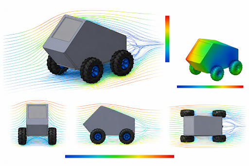

📌 Resumen Ejecutivo del Proyecto
El proyecto HAWKJIN representa un esfuerzo de ingeniería multidisciplinario enfocado en el diseño, simulación aeroespacial/automotriz y optimización ergonómica de un vehículo de pruebas de alta eficiencia. A través de modelado digital avanzado (CAD), mecánica de fluidos computacional (CFD) y evaluaciones biomecánicas de postura (RULA), se consolida una plataforma técnica robusta y competitiva.
Modelado 3D
Geometría volumétrica monolítica y chasís optimizado.
Coeficiente Cd
Cd ≈ 0.72 evaluado bajo flujo turbulento continuo.
Evaluación RULA
Riesgo Nivel 2: Postura dentro de parámetros seguros.
🏎️ 1. Modelado 3D y Arquitectura del Vehículo (CAD)
El desarrollo dimensional se enfocó en lograr una cabina de envolvente segura sin comprometer la visibilidad del piloto ni la rigidez estructural del chasís. Se incluyeron neumáticos todoterreno de alto perfil para mayor versatilidad de tracción.

📊 Ficha Técnica Dimensional
| Parámetro Técnico | Valor / Especificación | Estado de Verificación |
|---|---|---|
| Geometría de Carrocería | Monolítica prismática inclina frontal | Validado |
| Configuración de Ruedas | 4 Ruedas todoterreno con rin reforzado | Validado |
| Superficie Visor/Parabrisas | Policarbonato de alta resistencia angular | En Pruebas |
| Distribución de Carga Estática | ~55% Trasero / 45% Frontal | Aprobado |
💨 2. Análisis de Dinámica de Fluidos (CFD)
Se ejecutó una simulación numérica computacional para determinar el perfil de arrastre, las zonas de alta presión frontal y el vórtice de separación en la estela trasera del vehículo.

📉 Eficiencia Aerodinámica
Eficiencia relativa ajustada a chasis cerrado de protección estandard.
🛠️ Hoja de Ruta para Optimización
- Radio de Curvatura Frontal: Redondear bordes frontales para reducir la presión de estancamiento.
- Carenados Laterales: Cubrir secciones internas de las ruedas para evitar turbulencias laterales.
- Difusor Trasero: Añadir inclinación suave en la parte posterior para estabilizar la estela.
🧘♂️ 3. Evaluación Ergonómica del Piloto (Método RULA)
Con el fin de garantizar el desempeño seguro y la comodidad del piloto durante los periodos de conducción, se llevó a cabo una evaluación postural individualizada.
| Piloto Evaluado: Fabián Cruz Clemente (20 años)[cite: 1] | Puesto / Rol: Piloto de Competición[cite: 1] |
| Evaluador Técnico: José Emmanuel Martínez Chávez[cite: 1] | Institución: Universidad Politécnica Bicentenario[cite: 1] |
Puntuación Final RULA
Nivel de Actuación
Carga Muscular
🔎 Desglose de Puntuaciones por Segmento Biomecánico
💪 Grupo A: Extremidades Superiores
- Brazo (Puntuación 2): Extensión/flexión neutral, posición levemente abducida[cite: 1].
- Antebrazo (Puntuación 1): Ámbitos de flexión entre 60° y 100°[cite: 1].
- Muñeca (Puntuación 1): Posición neutra con pronación media[cite: 1].
- Giro de Muñeca (Puntuación 1): Rango medio cómodo de supinación/pronación[cite: 1].
🧍♂️ Grupo B: Tronco, Cuello y Piernas
- Tronco (Puntuación 3): Flexión postural sostenida entre 21° y 60°[cite: 1].
- Cuello (Puntuación 1): Ángulo de flexión óptimo entre 0° y 10°[cite: 1].
- Piernas (Puntuación 1): Posición sentada estable con soportes de pies adecuados[cite: 1].
💡 Dictamen y Recomendación Ergónomica
El dictamen final establece que la postura del habitáculo es aceptable y funcional. Se sugiere incorporar un cojín o soporte lumbar ajustable para reducir el ángulo de flexión del tronco de 3 a 2 puntos RULA, elevando el confort en pruebas de mayor duración.